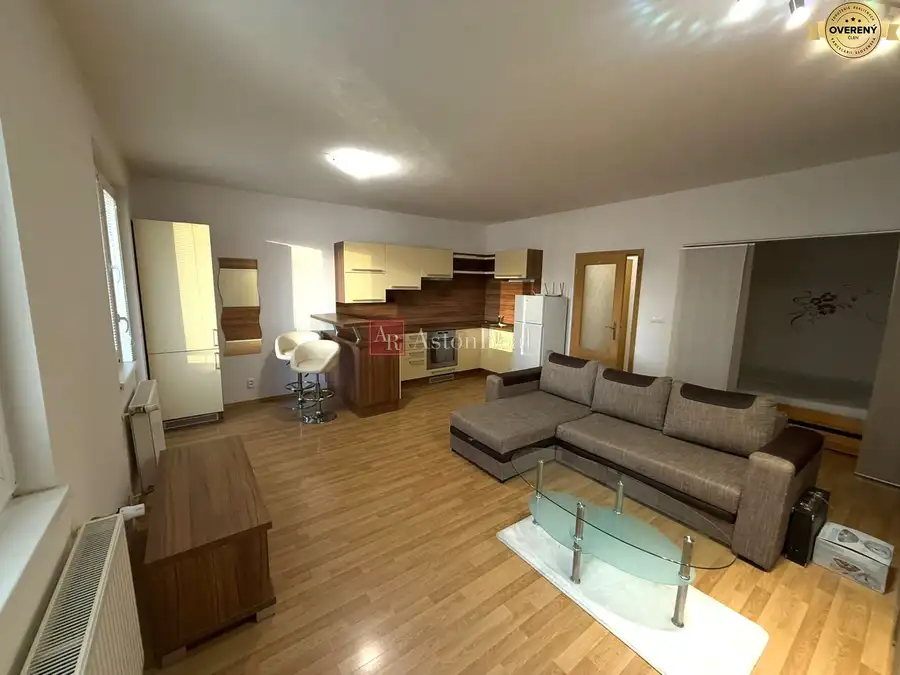
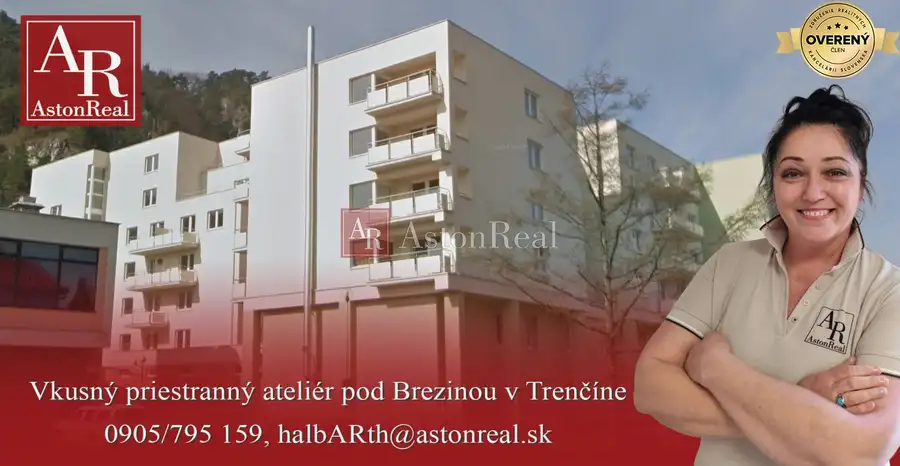
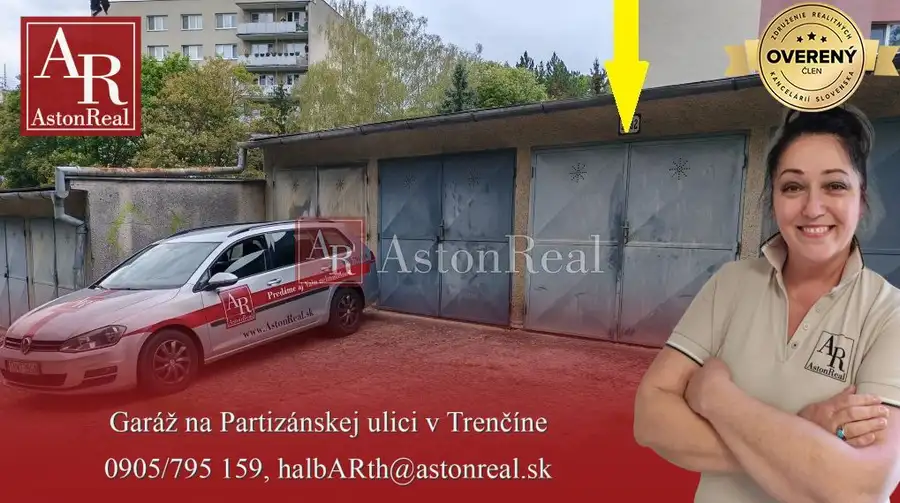

PREDAJ 2 pekné apartmány, 130m od pláže, výhľad na more, Sardínia
Castelsardo
- Dispozícia4-izbový
- Plocha112 m²
- Poschodie1. z 2
- Vlastníctvoosobné
O nehnuteľnosti
AstonReal ponúka vo výhradnom zastúpení majiteľa 2 pekné apartmány vzdialené od pláže 130m, s výhľadom na more a mestečko Castelsardo na Sardínii.
Historické mestečko Castelsardo sa nachádza v severozápadnej časti ostrova Sardínia, na pobreží Stredozemného mora, 50km od letiska Alghero, kam existujú priame lety aj z Bratislavy.
Apartmány sa nachádzajú v samostatne stojacom apartmánovom dome so 6 apartmánmi a s parkovacími miestami na vlastnom pozemku. Na prízemí a na prvom poschodí sú na každom 2 apartmány, v podkroví a polozapustenom suteréne sa nachádza na každom 1 apartmán. Zástavba má 12 rokov. V okolí sú obchody, služby a reštaurácie. Do centra a okolia premáva mestský autobus. Vzdialenosť do historického centra je 1,5km - autobusom 5 minút a peši 20 minút. Nachádza sa tu aj požičovňa áut. V mieste sú 4 piesočné pláže, piesok je aj v mori. Celkovo je v Castelsardo výborná infraštruktúra a výhodou je tiché prostredie.
Apartmán č. 1
Nachádza sa na 1. poschodí, 2+kk, 55m2, s 12m2 terasou s priamym výhľadom na more, kompletne zariadený a vybavený. Pozostáva z priestrannej obývačky spojenej s kuchyňou so vstupom na terasu, spálne s balkónom, kúpeľne so sprchovacím kútom, umývadlom, WC, bidetom a skladu. K bytu patrí jedno vlastné parkovacie miesto + 2 miesta pre hostí. Byt je kompletne vybavený spotrebičmi, zariadením a novou zabudovanou klimatizáciou (2 ks). Počet lôžok je 2 + 2 rozťah. Nábytok aj vybavenie sú ako nové, iba dvojročné.
Apartmán č. 2
Nachádza sa na polozapustenom suterénnom podlaží, 2+kk, 57m2, bez terasy, kompletne zariadený a vybavený. Pozostáva z priestrannej obývačky spojenej s kuchyňou, spálne, kúpeľne so sprchovacím kútom, umývadlom, WC, bidetom a druhej menšej kúpeľne s umývadlom, WC, bidetom a práčkou. K bytu patrí jedno vlastné parkovacie miesto + 2 miesta pre hostí. Byt je kompletne vybavený spotrebičmi a zariadením. Počet lôžok je 4 + 2 rozťah. Nábytok aj vybavenie sú ako nové, iba dvojročné.
V apartmánovom dome je dotiahnutá kabeláž na internet a TV.
Mesačné náklady na jeden apartmán sú do 100€/mes. (elektrina, voda, odpad).
Apartmány sa predávajú len spolu.
Obhliadky sú možné v septembri.
Predajná cena zahŕňa nasledujúce služby, finančné a právne poradenstvo, tj. vypracovanie zmluvnej dokumentácie, zabezpečenie návrhu na vklad na príslušnom katastri, vrátane uhradenia správneho poplatku a províziu realitnej kancelárie. Info: ,
Parametre
| Celková rozloha | 112 m² |
|---|---|
| Úžitková plocha | 112 m² |
| Poschodie | 1/vyššie poschodie |
| Počet poschodí | 2 |
| Počet izieb | 4 |
| Vlastníctvo | osobné |
| Odvoz odpadu | áno |
| Kúpeľňa | áno |
| Balkón | áno |
| Terasa | áno |
| Parkovanie | vlastné vyhradené |
| Postavené z | tehla |
| Zariadenie | zariadený |
| Klimatizácia | áno |
| Energetický certifikát | nie |
| Okná | plastové |
| Orientácia | západná |
| Dátum zverejnenia | 28. 9. 2026 |
Kde to je
Mohlo by Vás zaujímať

Byt9 131 900 €IBA U NÁS! Byt 1,5 izb. byt, 41m2,balkón, zariadený, Východná, Trenčín Trenčín 1,541 m²1. podlažie AstonReal ponúka vo výhradnom zastúpení majiteľa na predaj priestranný a vkusný 1,5-izbový byt s balkónom, o výmere podlahovej plochy 41m2, vo…
Byt10 137 000 €IBA U NÁS! Vkusný 2-izbový ateliér, 58m, Pod Sokolice,Trenčín Trenčín 2-izbový58 m²1. podlažie AstonReal ponúka v exkluzívnom zastúpení majiteľa na predaj pekný, priestranný a vkusný 2-izbový ateliér bez balkóna (58m2), v novostavbe z r. 2009…
Ostatné7 33 000 €IBA U NÁS! Garáž, 17m2, Partizánska ul., Trenčín Trenčín 17 m² V garáži je zavedená elektrina (osvetlenie, zásuvka 230V). Garáž má spoločný elektromer s ostatnými garážami v danom bloku. Ročné náklady na…